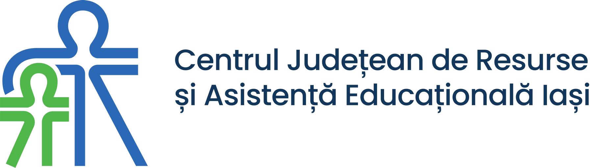
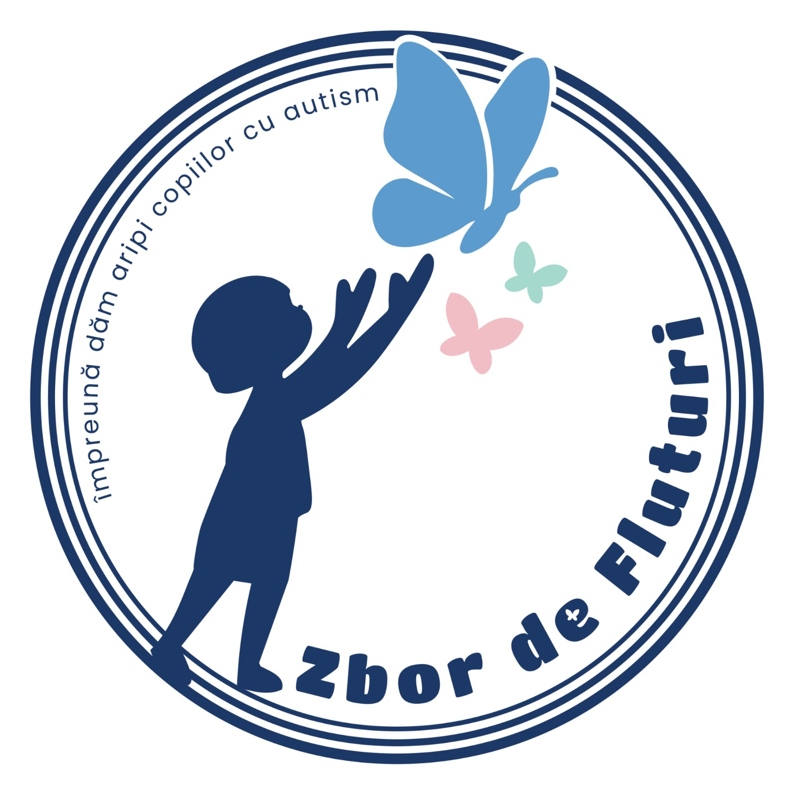
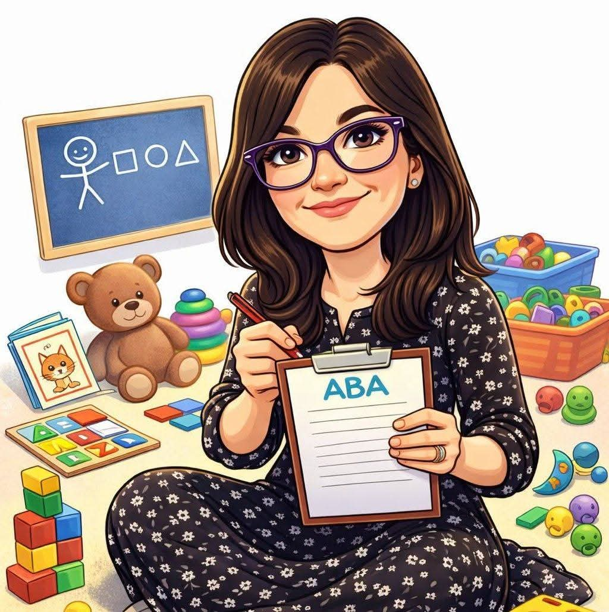
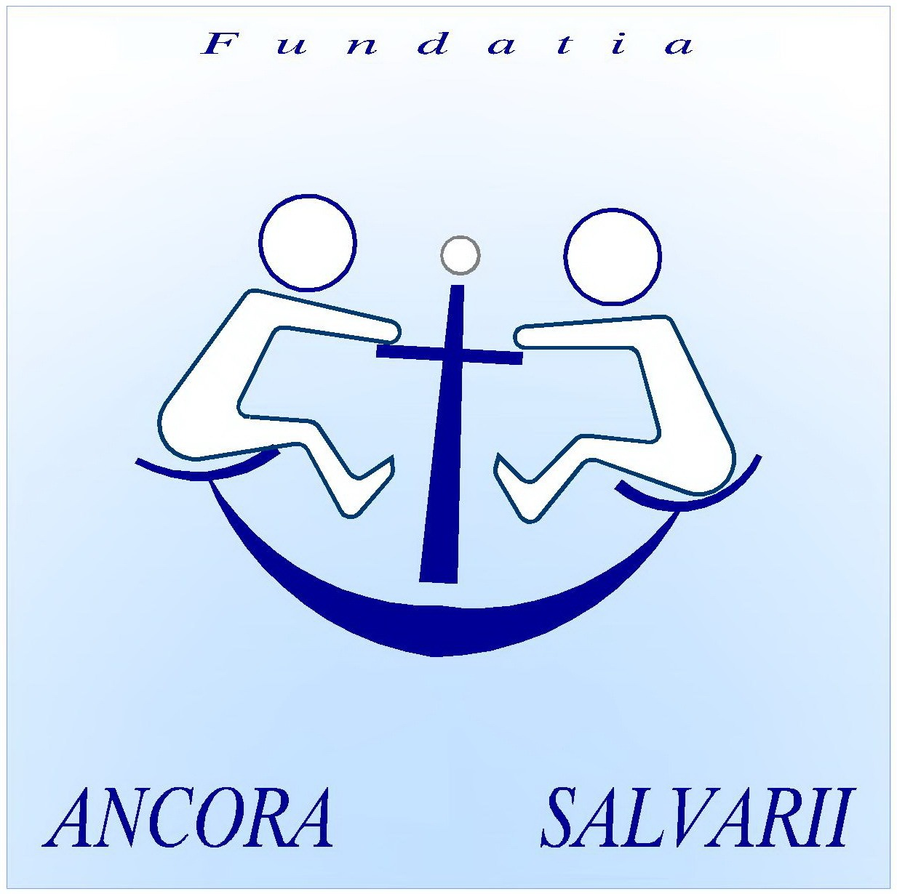
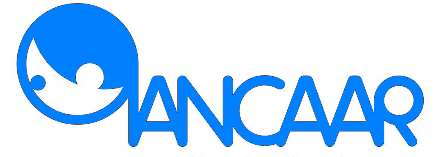

Campania „Albastru pentru Solidaritate" este posibilă datorită partenerilor care cred în incluziunea persoanelor cu autism
Inspectoratul Școlar Județean Iași — partener educațional principal, coordonează participarea școlilor din județ

Centrul Județean de Resurse și Asistență Educațională Iași — suport psihopedagogic și expertiză în educație specială
www.cjrae-iasi.roPartener administrativ local — sprijin logistic pentru organizarea evenimentelor publice din municipiu
Școala Gimnazială Specială Pașcani — instituția coordonatoare a campaniei, gazdă a activităților principale

Asociație dedicată persoanelor cu TSA și familiilor lor — partener în organizarea seminarului și furnizor de expertiză
www.asociatiazbordefluturi.ro
Cabinet de psihologie — partener în activitățile de sprijin psihologic pentru copiii cu autism și familiile lor

Fundație cu experiență în servicii sociale — partener în activitățile de sprijin pentru familiile copiilor cu autism

Asociația Națională pentru Copii și Adulți cu Autism din România, Filiala Iași — suport în rețea națională și formare profesională
ancaar-iasi.roPartener tehnic responsabil cu administrarea site-ului campaniei și infrastructura digitală a proiectului
Căutăm instituții, organizații și companii care să se alăture campaniei „Albastru pentru Solidaritate" ediția a XIV-a. Parteneriatele pot lua forme diverse: logistică, expertiziate, comunicare, finanțare.